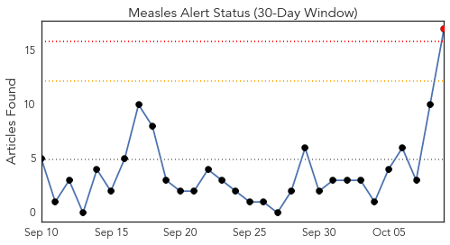
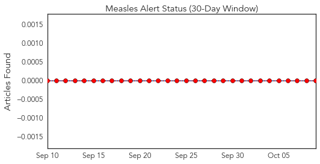
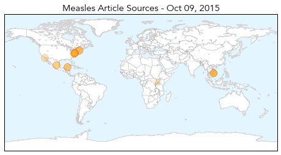
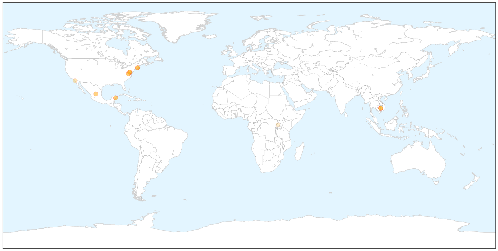
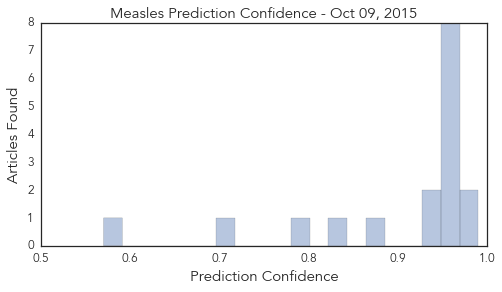

Measles
30-Day Web Trend
1 alerts, 0 warnings

30-Day Twitter Trend
0 alerts, 0 warnings

Article Locations

X

Article Confidences
Top Articles:
- 0.990
- U.S. Risks Major Measles Outbreak, Experts Warn
- 0.978
- Many Americans Traveling Abroad Lack Key Vaccinations
- 0.967
- Don't leave home without them
- 0.965
- Young child diagnosed with measles in northern Virginia
- 0.965
- Young child diagnosed with measles in northern Virginia
- 0.965
- Young child diagnosed with measles in northern Virginia
- 0.958
- Measles back from elimination in Cambodia
- 0.958
- Vaccines: Don't leave home without them
- 0.957
- Measles confirmed in rural Cambodia less than a year after being ‘measles-free’
- 0.955
- Measeles vaccine gaps put U.S. at risk
- 0.940
- Young child diagnosed with measles in northern Virginia
- 0.937
- Many Traveling Abroad Lack Key Vaccinations
- 0.866
- 1 in 8 U.S. kids not protected against measles
- 0.826
- Cambodia Confirms One Measles Case after Elimination of Measles
- 0.789
- WCAX.COM Local Vermont News, Weather and Sports-
- 0.707
- Study: Drop in measles vaccinations may cause more outbreaks
- 0.570
- The most from the coast
Top Tweets:
-
No tweets found for Oct 09, 2015